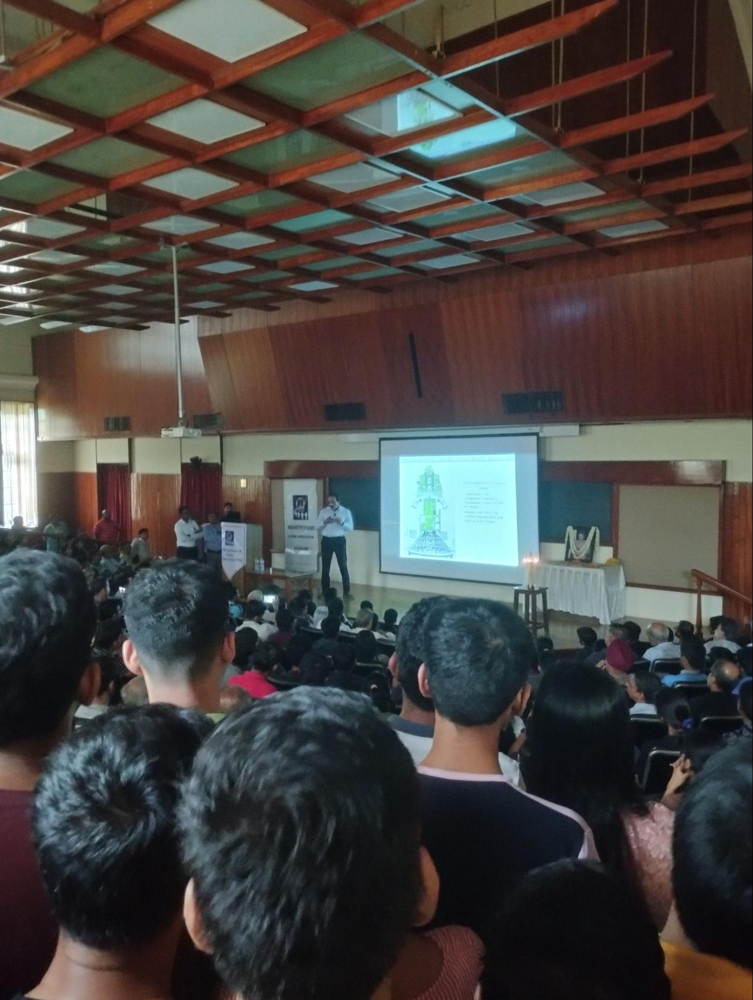

About me
“Nature isn't classical, dammit, and if you want to make a simulation of nature,
you'd better
make
it quantum mechanical, and by golly it's a wonderful problem, because it doesn't look so easy.”
~ Richard Feynman
My interest in electronics began in my first year of engineering when my cousin Amol Mahurkar
introduced
me to voltage
regulator circuits. The sense of fulfillment that arises when you see something you've
built
finally start to function is truly unique. This served as my initiation, and thanks to his guidance,
I
embarked on numerous additional projects within the realm of electronics. This experience bolstered
my
confidence and helped me understand the essential elements required to execute a successful project.
Prof. Serge Haroche,2012 French Nobel laureate on
11th
Feb 2023 at IISc, Bengaluru.
I had the privilege of attending a talk given by the Nobel laureate himself, Prof. Serge Haroche. His
talk was on the “History of Science of Light”.
Talks of this nature cultivate a keen interest in Quantum technology.

We, at IISc, were fortunate to have the opportunity to listen to the ISRO
chairman
just seven days before
the Chandrayaan 3 landing. During his talk, he elucidated the factors contributing to the Chandrayaan 2
landing failure and the subsequent enhancements implemented in Chandrayaan 3.
